Cogito, ergo sum
UE3:UnrealEd toolbar
From Unreal Wiki, The Unreal Engine Documentation Site
This article provides an overview of the Unreal Editor's main toolbar.
- New
- New level, like File -> New.
- Open
- Opens a level, like File -> Open.
- Recent
- Brings up a list of recently opened levels, like File -> Recent.
- Save
- Saves the current level, like File -> Save Current Level.
- Save All
- Saves all open levels, like File -> Save All.
- Undo
- Takes back a previous user action, like Edit -> Undo.
- Redo
- Restores a previously undone user action, like Edit -> Redo.
- Clipping distance slider
- Adjusts the far clipping plane distance, i.e. how far you can see in the viewports.
- Mouse lock
- Mouse can only be used to select actors, not to move, rotate or scale them.
- 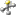 Show widget
- Like Edit -> Show Widget.
- Translation widget
- Activates the translation widget, like Edit -> Translate.
- 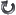 Rotation widget
- Activates the rotation widget, like Edit -> Rotate.
- 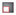 Scaling widget
- Activates the uniform scaling widget, like Edit -> Scale.
- 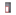 Non-uniform scaling widget
- Activates the non-uniform scaling widget.
- Reference Coordinate System
- The reference coordinate system for the translation widget.
- World
- Moves the actor along the global X, Y and Z axes, i.e. independently from its rotation.
- Local
- Moves the actor along its local X, Y and Z axes, i.e. according to its rotation.
- Fullscreen
- Toggles fullscreen mode. Fullscreen mode is similar to maximizing the editor window, but additionally hides the title bar and Windows task bar.
- 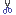 Cut
- Copies selected actor(s) to the clipboard and removes them from the level.
- 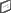 Copy
- Copies selected actor(s) to the clipboard and leaves them in the level.
- Paste
- Adds actor(s) from the clipboard to the level.
- 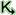 Open UnrealKismet
- Opens the Kismet editor.
- 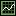 Toggle raw distribution curves
- Toggle socket snapping
- 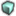 Build Geometry
- Builds only geometry.
- 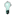 Build Lighting
- Builds only lighting.
- 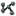 Build Paths
- Builds only paths.
- 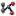 Build Cover Nodes
- 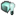 Build All
- Builds the level.
- 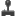 In-Editor Play
- Opens a new viewport for in-editor play.